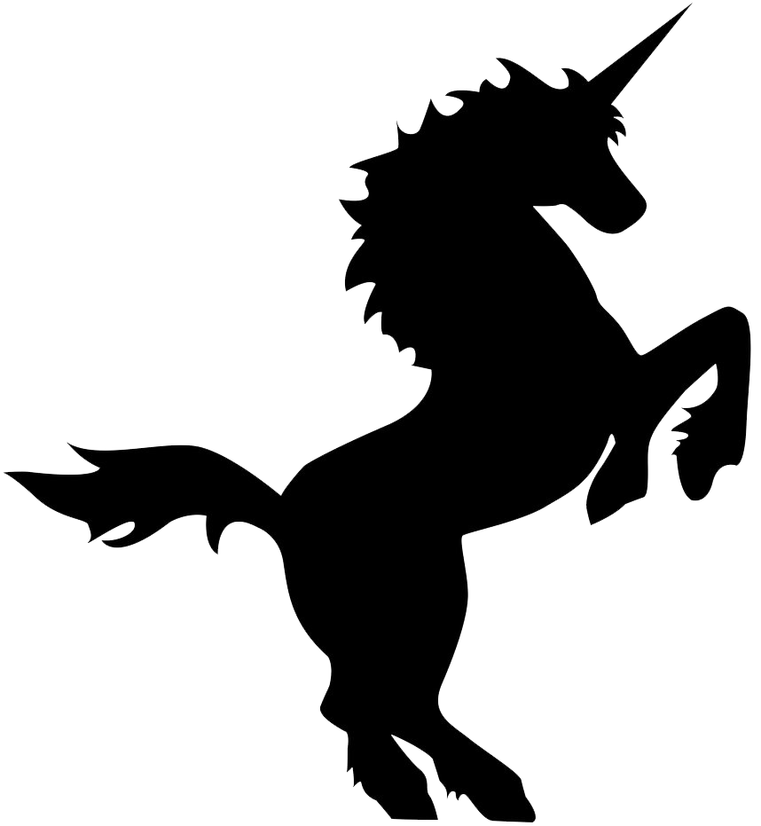
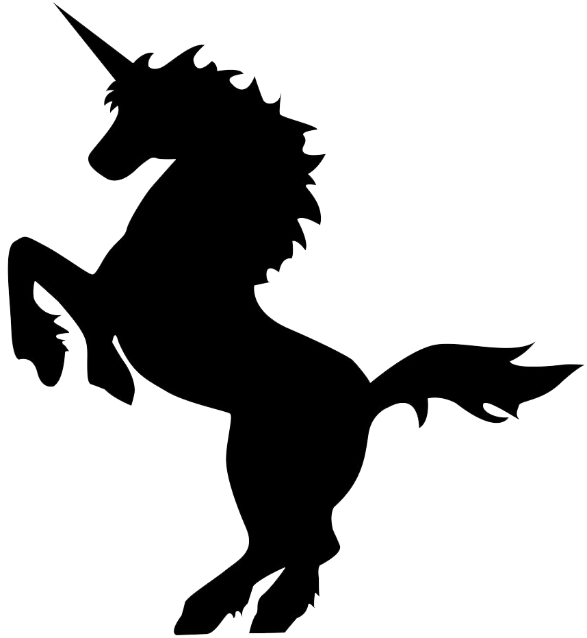

The Unicorn Song
by The Irish Rovers


A long time ago, when the Earth was green
There was more kinds of animals than you've ever seen
They'd run around free while the Earth was being born
And the loveliest of all was the unicorn
There was green alligators and long-necked geese
Some humpty backed camels and some chimpanzees
Some cats and rats and elephants, but sure as you're born
The loveliest of all was the unicorn
The Lord seen some sinning and it gave Him pain
And He says, "Stand back, I'm going to make it rain"
He says, Hey Noah, I'll tell you what to do
Build me a floating zoo,
and take some of those...
Green alligators and long-necked geese
Some humpty backed camels and some chimpanzees
Some cats and rats and elephants, but sure as you're born
Don't you forget My unicorns
Old Noah was there to answer the call
He finished up making the ark just as the rain started to fall
He marched the animals two by two
And he called out as they came through
Hey Lord,
I've got green alligators and long-necked geese
Some humpty backed camels and some chimpanzees
Some cats and rats and elephants, but Lord, I'm so forlorn
I just can't find no unicorns
And Noah looked out through the driving rain
Them unicorns were hiding, playing silly games
Kicking and splashing while the rain was falling
Oh, them silly unicorns
There was green alligators and long-necked geese
Some humpty backed camels and some chimpanzees
Noah cried, Close the door because the rain is falling
And we just can't wait for no unicorns
The ark started moving, it drifted with the tide
The unicorns looked up from the rocks and they cried
And the waters came down and sort of floated them away
That's why you never see unicorns to this very day
You'll see green alligators and long-necked geese
Some humpty backed camels and some chimpanzees
Some cats and rats and elephants, but sure as you're born
You're never gonna see no unicorns